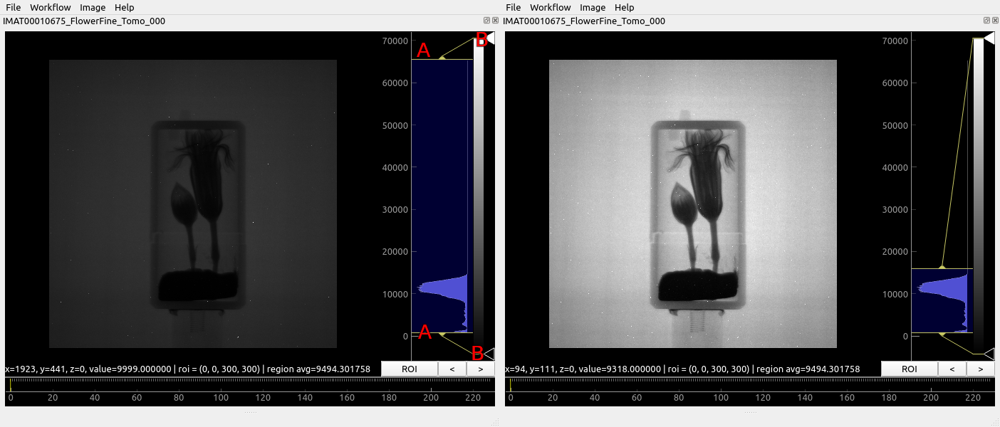

Image view¶
The image view widget is used in many places in Mantid Imaging to display individual images and image stacks. It is based on ImageView from PyQtGraph and allows fast interaction with large datasets.

To the right of image the histogram viewer allows controlling how the current image is displayed. Below the image is the stack control which to select which image in the stack is displayed.
Histogram¶
{kind=link}
The histogram viewer controls how the pixel values in the image are displayed on the screen. The histogram shows the number of pixels for each intensity value. In the above image most of the pixels have values distributed around 10000 and structure in the histogram can be seen between zero and 10000. A few bright spots above 10000 are visible in the image.
The yellow bars (labelled ‘A’ above) set the range of interest. Moving the top bar down to around 15000 allows far more of the detail to be seen, at the expense of making the bright specs less visible. This selected range is then coloured according the selected gradient, here black to white greyscale.
The control ticks (triangles labelled ‘B’ above) can be moved around to customise the gradient. Control ticks can be added by left-clicking and removed by right-clicking and selecting “Remove Tick”.
Alternative colour schemes can be selected by right-clicking on the gradient as shown below. It is also possible to choose if the gradient interpolation between ticks occurs in Red-Green-Blue (RGB) or Hue-Saturation-Value (HSV) colour space.
{kind=link}
Automatic Gradient Tweaking¶
Users can also use the Jenks Breaks or Otsu algorithms to automatically change the appearance of the gradient. The software will then attempt to categorise the image into groups and select colours that emphasise the contrast between the different materials in the image. In some cases, this may make the different materials in the image more easy to distinguish from one another. Be aware that the success of the algorithm greatly depends on how much the histogram cooperates.
This feature can be accessed by right clicking the projection histogram in the image view and selecting “Auto”. In the Reconstruction window, there is also the option to access the auto colour feature by clicking on the “Auto Change Colour Palette” button in the bottom-left corner. This is shown below:

This then brings up the auto colour palette menu. From here you can choose the number of materials, the algorithm you wish to use, and the desired colour map. The default colour map is “spectrum” as it appears to be best-suited to taking the results of Otsu/Jenks and choosing colours that emphasise the separateness of the different regions. Note that changing the colour map only provides a cosmetic difference and does not influence the results of the algorithm. Users should note that the execution time of the algorithms increases greatly with the number of materials.
{kind=link}